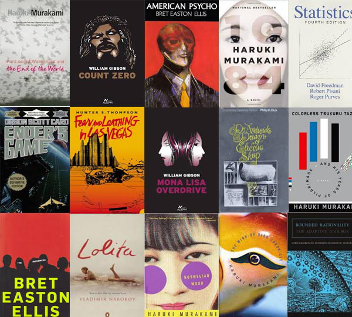

2014 Literature Round up

Twenty fourteen, what can I say. It was consistent and not always pretty but I made it through. I made my first actual contribution to an open source project, learned the value of gists, started opening up GALE to the world, and successfully made it through putting on a one week bootcamp transform non-coders into pythonistas. I at least got one manuscript out (albeit a review) and a conference presentation at AMIA. I even launched Socraticc as a part of OmegaK and brought it right down after no one wanted to use it after a few months.
But what I'm really happy about is that I've mostly maintained a promise to myself that I would be consistently reading throughout the year. This is my quick year in review of what I've made it through, if for nothing else other than posterity.
Hard-Boiled Wonderland and the End of the World
1Q84
Colorless Tsukuru Tazaki and His Years of Pilgrimage
Norwegian Wood
Kafka on the Shore
The Wind-Up Bird Chronicle
—Haruki Murakami
This is the year wherein I found Haruki Murakami and was simply blown away. The amount of emotion and alienation induced by his writing is amazing and for most of the books I've tried to read them with a soundtrack that corresponds to the book (from whichever classical artists figured most prominently in the work) and it's been a wonderful experience. I can't recommend these works enough. I just finished Colorless Tsukuru Tazaki and His Years of Pilgrimage and, while I didn't feel as strongly about it while reading it, I'm already starting to form a much stronger attachment and opinion about it. You can't go wrong with any of these books, but my favorite would have to be Kafka on the Shore.
Count Zero
Mona Lisa Overdrive
—William Gibson
I finally finished the Neuromancer trilogy after seeing William Gibson do a Q&A during the Chicago Humanities Festival (his answers were wonderful and insightful, the questions were not so great however). I realized that I hadn't finished the rest of the trilogy so I went back and finished it (I was switching back and forth between Gibson and Stephenson when I read Neuromancer). These books were actually great additions to the series and I felt that they really enhanced the story in Neuromancer. Next year, I'll start The Peripheral once I'm certain I've forgotten all the spoilers I've seen.
Statistics
—David Freedman
I never took an introductory statistics course, and as such my understanding of the statistician "language" and viewpoint was pretty lacking (I'm more a fan of Monte Carlo methods and bootstrapping to test statistical hypotheses), so I wanted to shore up my ability to understand that viewpoint and the language. This book was very well written and I really enjoyed all of the examples given. Now I just need to finish Andrew Gelman's Bayesian Data Analysis and Tibshirani's Elements of Statistical Learning next year.
The Informers
American Psycho
—Bret Easton Ellis
I really like some of Bret Easton Ellis' work, and American Psycho was a great read but The Informers was completely forgettable.
Do androids dream of electric sheep?
We can remember it for you wholesale
Philip K. Dick
Somehow these books slipped through the cracks when I read the rest of Dick's work earlier. Do androids dream of electric sheep? is a wonderful story, that I was surprised to read in terms of how much it differed from Ridley Scott's movie adaptation. The same can be said for We can remember it for you wholesale, the funny thing is that I'm rather surprised with how successful the adaptations of Dick's work are (even when they deviate from the written story) while Gibson made an explicit comment about how he hated the adaptation of Johnny Mnemonic (which I can understand after seeing it).
And that's the end of 2014, time to make some goals for 2015 and deliver on them.